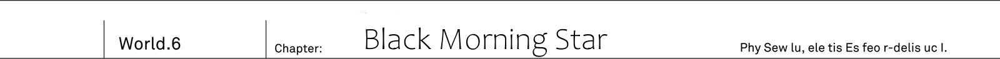

TL Note: Morning Star is a more literal translation of Lucifer's name, the first fallen angel. Also the latin for Venus.
Io's largest unexplored region - The Angel Palace. On the highest floor of the palace, in the [Azure True Heaven] hall, which had no walls or ceiling, was standing an altar exposed to the winds. In the place where in every direction one could see only the blue skies...
"Stop already, Alfreyja!"
The elven girl screamed with a hoarse voice.
"Thee... I cannot bear to see thee so empty! Thee has been only deceived by the monster. Come back to thy senses!"
It was a plea full of grief. Being swept by the winds, her words melted into nothingness.
"It's not too late now. We can still do it over. That's why..."
"Get away, Reiren!"
Grabbing her by the nape of her neck, Jeanne jumped to the side.
Magnificat [The Lord crushes your wings and you fall to the ground, lamenting one.]
The air creaked with a thunderous roar. The floor exploded. The white metal floor broke into tiny pieces, and started falling down towards the sea of ancient trees far down below. If Jeanne were late even by an instant, the elven girl would have fallen down together with these debris.
"...Alfreyja. What is the meaning of this?"
Instead of the elven girl, who was kneeling on the floor, Kai cleared his throat and mustered the words:
"You, what was that just now?"
[...] TL Note: This Alfreyja's dialogues are in brackets.
"Where is your magic tool? Why can an angel like you use magic without a magic tool!?"
That was indeed the case. The angel, when receiving Zero Code, let go of all of his magic tools:
The brass baton, capable of summoning blazing red sword.
The silver baton, capable of calling forth rain of lightning.
The trident, capable of destroying barriers.
All of them were rolling around on the floor. Moreover, once attacked by Zero Code, his heavenly garments were torn into pieces. And then the fallen angel Alfreyja only swung down his left hand towards the Reiren.
[This is your answer.]
They heard the sound of metal crushing. The angel crushed the baton that was rolling under his foot.
[By heaven's will, this is my power, as the shining morning star...]
"No!" - the shrine maiden shouted.
"Awaken from thy delusion, Alfreyja! Look at thy wings on the back. Don't thee see that thy wings are crying?!"
The elven girl pointed at the angel's wings. The majestic and beautiful six pure white wings had faded, dried and withered. They were no longer capable of flying him in the skies. And there was a reason for that.
"Just by looking at how much weight thy cheeks lost, I can tell. Thy power didn't increase. Thee is just borrowing it in advance. Probably, thee is consuming a tremendous amount of magic power..."
Right now, the fallen angel was burning his magic power beyond any limit. If it were a car's engine, it would be overheating. And not being able to withstand it, his wings, which are closest to the organ producing magic power, are degrading.
"Thee is leaking magic power through thy wounded wings. Isn't that the reason why thee can use magic without assistance of magic tools?"
[...]
"Angels, elves and dwarves are all the same. Fairies might be a somewhat different case, but thee couldn't have forgotten wherefore we art united together (into a single race)?"
Although their bodies have an organ that can produce magic power, they have no means to release it. Therefore they cannot use magic. In this regard foreign gods are similar to humans. Due to that, they created magic tools to assist themselves in manipulating magic powers.
"Magic tool is what did start foreign gods. There is nothing to be ashamed about the magic tool, instead we shouldst be proud of it! Forgetting that, and being joyous about using magic without assistance of magic tool. Is that not a true disgrace to the foreign gods!"
[Silence.]
Winds started to gather into a storm. Clouds among the blue skies started relentlessly whirling, condensing, and beneath the dark clouds something started to shine.
Lightning.
Is this a lightning attack like before!?
Powerful lightning tore through the clouds. Without assistance of magic tools, he was able to display power beyond any limit. This alone certainly made the fallen angel to transcend the angels as a race.
"It might be threatening, but a single spell is not enough to gallow me!"
The elven girl put out her seven layered protective garments. The faintly shining silk garment received the lightning attack, aiming at her head. Regardless of how wide in scale the lightning is, Reiren's spirit garments are able to absorb seven magic attacks.
"Reiren, move back. Don't go out at the front!"
"...Eh?"
There was the sound of tearing clothes. These spirit garments, the most prized treasure of the elves. Right in front of her eyes, the seventh coloured garment, which she was holding, was cut into halves.
Magnificat [O my lord, my humble self is the Lord's proxy and judge.] TL Note: Too high level 我が王よ、汝は汝の主たる天の代行者にして審判者 and I'm not sure I can make sense out of it, because 汝 is usually you, and here it makes a little sense?
[Lord Sword Divine Gift.]
It was a flamberge, whose hilt looked like the imitation of a wing. One could only wonder just when it had manifested. In the fallen angel's hand was a tightly grasped dark red coloured sword. Its colour made it look like it was soaked in blood.
The lightning attack was just a distraction. By distracting the elven shrine maiden with enormous light, he was able to quickly approach her. And then he cut her magic tool with the sword.
"...I-impossible. For a magic sword... to pierce through my spirit garments...!"
The elf's shoulder was cut. The fallen angel's sword was already able to cut the elven girl's skin, covered by protective garments. Before their eyes was the terrible scene of emerald blood flowing from the girl's shoulder.
"Reiren!?"
Jeanne reflexively caught the falling down elven girl in her arms.
TL TODO: I'm a bit unsure what author means with それが仇, 仇 reads as ada and can mean various things like: ill intent, grudge or harm.
[So foolish.]
Jeanne screamed. While holding the elf, she was attacked by the fallen angel's sword. The knight's armour was cut like a thin paper, from her back to the side.
[Do you wish to be cut down while protecting this elf?]
"...!"
Both the elf and the human fell to their knees. Both the girls, unable to muster a single word, were facing down towards the floor.
[Disappear.]
"Alfreyja!"
Towards the angel with his dark bloody flamberge that wounded both the girls, Kai sent a vertical slash with his own sword.
[Hou? Your sword...]
While deflecting the sword, the fallen angel laughed.
[I see it, now.]
"I get it, your flamberge...!"
Both the human and the fallen angel understood at the same time. The moment their swords crossed, they both caught a glimpse of each other's sword's power.
His sword is without mistake a magic sword.
But then, why it was able to pierce through Reiren's protective garments?
The seven coloured garments served as a barrier, and was able to withstand up to 7 simultaneous magic attacks. Taking into consideration that it could even defend against wide area magic, its defensive powers were even above Code Holder. So it made him wonder how these spirit garments could get torn.
"Since it is a magic sword, it can be restored always!"
[This is the heaven's work.]
The fallen angel had raised his sword high above his head. Lord Sword Divine Gift - Reiren's protective garment had functioned as usual, and was able to receive up to 7 blades. And each of the these 7 times Alfreyja's sword was destroyed. And then each time he had restored the sword. The eighth sword pierced through the spirit garment.
TL Note: Literally cheat. Well, Kai got his own cheat.
[Human. Just what is your sword?]
"..."
[The moment our blades crossed, my sword was destroyed a hundred times.]
As Code Holder and the fallen angel's sword crossed, even though only for a moment, the same phenomena repeated itself a hundred times. Kai's Code Holder [cut fate]. In order to remove the fatal fate for Kai, Code Holder had destroyed the fallen angel's sword. But the fallen angel, who noticed it, had immediately restored the sword. It happened hundreds of times. The fallen angel was overflowing with magic power - It was a possible feat for him, precisely because he was burning through all of this magic power, to the extent that both his body and six wings had withered.
"Alfreyja."
Aiming at the fallen angel he stomped the floor. Kai pressed on towards the angel who was recklessly overpowering himself beyond any limit.
"Reiren was really respecting you."
[Obviously.]
"No, the real you would never say something like [obviously], am I not right?. Right now you are not the real you, but a simple avatar!"
[Nothing has changed. At least for humans!]
They were locked into a sword fight. Both swords were flashing at an enormous speed. It continued for five minutes. While Alfreyja had advantage of height and strength, Kai was able to push back against him with his leg work.
[...Are you on equals with me? Just how much strength resides in your thin arms.]
"Naturally. You might triumph in air, but fighting on the ground is just not for you!."
Losing focus would immediately mean to be pushed back here. Gritting his teeth, he repelled the angel's sword with Code Holder.
As I thought.
Even if the opponent is an angel, if it is a sword fight, I can do it.
In the first place for angels it is unheard of to swing swords on the ground. But that was the fallen angel's own choice. In order to wield enormous and powerful magic, he sacrificed his own wings.
"In the first place such a fight would have been impossible. Had you flown into the skies and started firing off your magic tools one-sidedly, I would have no means to oppose."
[...]
"But now is my chance. In place of Io's humans and all of foreign gods I challenge you. With all of my spirit!"
[Huh!]
He scorned.
[All of foreign gods? I have no need for such weaklings!]
Magic power started making noise in air. The fallen angel's sword that was clashing with Code Holder, started getting even more supply of magic power. Flamberge became a Zweihender. And to this blade...
"Slow."
Kai's blade of sunlight colour, made a vertical slash towards the upper air.
TL Note: はるか上空へと斬り上げた A bit unsure how exactly it supposed to look
[Impossible...]
"You have never swung something like a sword before."
[...What?]
"And the proof is that you thought that a bigger sword is stronger."
By increasing the length of blade, you can also somewhat increase the range of attack. But larger swords like Zweihender required a certain ability to be properly handled.
If it were something like a familiar magic tool...
Like that trident on the ground, it would have certainly been a different story.
Kai never fooled around when it came to drills; he would not fall behind against enemies using unfamiliar weapons. This was the difference between talent and training alongside enthusiasm. For that reason he held a pride for not being defeated against the four race's heroes.
[...]
The fallen angel's expression was strained. Having superior sword skills and Code Holder, capable of cutting off magic, Kai held an advantage. As he was burning through surplus of magic power, a prolonged battle left Alfreyja at a disadvantage.
[It seems it is time to deliver judgement for this life.]
"What?"
[Collapse.]
The fallen angel said a single word. And his voice started spreading through the place...
The Angel Palace shook.
The floor, on which Kai was standing, started to tremble. He was wondering if the ground was rumbling. But they were high above in skies. Although tied to the top of ancient tree, it shouldn't be possible for vibrations on the earth to reach this place.
[To destroy this life. The Angel Palace shall collapse.]
Under his feet - a portion of the floor had fallen down. Kai lost his balance.
[All of you useless bunch shall fall down to ground.]
"...Gu!?" TL Note: ぐっ!? voice of struggle
With his balance lost, Code Holder, that was unable to deflect the fallen angel's sword, fell down. The back of his hand was cut and blood was flowing from his right hand. Nevertheless he extended his left hand to try to reach Code Holder, which the fallen angel trampled with his foot.
To go this far...
For just me alone, he is seriously planning to destroy the angel palace.
[Disappear, human.]
Roaring lightning striked out of whirling dark clouds. For Kai who had let go of Code Holder, there was no way to defend against the incoming lighnting from the sky. The fallen angel believed it to be so.
[Turn into dust.]
But. The lightning strike from heaven didn't reach Kai in the end.
"...What, Vicious?"
There was Reiren, floating in sky. She was being held by battle angel Vicious, who had attacked them down below.
"Isn't it a bit late to come back to thy senses?"
"...Alfreyja-sama."
The subordinate angel saw it all. How her master changed. Choosing the wicked power and sacrificing his own wings. And then, for the sake of defeating a single human, this fallen angel chose to even collapse the angel palace. Therefore she came to the conclusion: to whom to give her aid.
"Seven ladies... Come fourth!"
Elven shrine maiden Reiren put up the torn spirit garments. The seven coloured garment absorbed and dissolved the lightning attack. Moreover, the wings of Viscous, who was carrying Reiren, supported the garment in places where it was torn.
[You! Bastards...]
"Where are you looking."
The chest of the fallen angel, who was glaring at Reiren, was pierced by a shining arrow.
"...Do not underestimate... Our stubbornness!"
Said the knight Jeanne who was kneeling down on one knee. Behind was her bodyguard Fairin, supporting her. And the knight fired the arrow with all of her strength.
[Tch.]
Fallen angel Alfreyja was taken aback. If it were heaven lord Alfreyja's barrier at full power, then the attack just now wouldn't be able to injure him. This was his price for devoting himself fully to magic attack power.
[Think I'm done, inferior species!?]
He roared. The overpowered angel was yet to fall. ED note: Just what kind of overclocking is this lol.
He was transforming all of his life force into magic power. In fact he was using so much power that his wings had completely withered. Yet, as he received Jeanne's attack his killing intent was only rising more. But, the fallen angel didn't notice. No, he had completely forgotten about it.
"Yeah, it is the end."
There was a human very close to him. Alfreyja was trampling over Code Holder under his feet. And in Kai's hand was no sword, not to mention a gun or a knife.
[You...?]
Worthless human.
TL Note: This part is kinda weird それでも瞬時に油断をぬぐい去ったのは, I wish author would choose some better wording, because it is just misleading in it's sense.
Nevertheless, likely due to angel Alfreyja natural strength, he had completely disregarded any notion of carefulness. He smashed in full force, with his mysterious sword.
[You do not know when to give up. Just disappear!]
The fallen angel's sword slashed through air. Kai bended over on the floor and narrowly avoided the bloody dark blade. As if like he had been told, Kai completely disappeared in front of fallen angel Alfreyja's eyes.
"Fallen angel. Now I'll turn your world upside down." TL Note: Needs more accurate translation お前の天地をひっくり返す
[...What!?]
"You have no way to defend against it."
In order to challenge the four races, humans created this technique. Empty handed. In the true world, as Kai belonged to MDA, it was his duty to work on learning presumably anti four races martial arts.
He made a kick attack. Putting all his strength into the kick and using the edge of the foot, he knocked both the legs of fallen angel Alfreyja at the same time. Tripping, angel fell down hitting the back of his head. Of course with such a sturdy body he had no injuries. But experiencing something like that for the first time was shocking for the angel.
It was unthinkable for him. He couldn't comprehend just what caused him to fall down.
Normally such a technique wouldn't work against heaven lord Alfreyja.
After all, angels have wings.
Once tripped, they could just remain afloat in air. But...
Being an angel who lost his wings in exchange for power, he lost the skies.
[...]
For an angel, who was closest to the skies, being turned upside down like that was something unknown and Alfreyja wasn't able to react. He couldn't yet comprehend the shock of falling down on his back. And then, as his back knocked against floor, there was the vital organ of angels, that produced magic power.
"Choosing to fall was mistake that led you to defeat. Alfreyja..."
Kai strikes down with his fist. Receiving the fist by his breast, the shock went through his spine, reaching the magic producing organ. The six winged angel fell into silence. It was the end.
The organ, that was producing magic power, was already close to it's limit. And with this attack it completely stopped functioning. He couldn't move.
The motionless angel was lying down, facing up with open eyes. And then all of a sudden he burst out blood with intense coughing.
"Alfreyja-sama!?"
Battle angel Vicious dived in from above. Toward the subordinate that was trying to rush over to her master's place...
"...Go away... Vicious!"
It was a restrained voice. TL note: I'm not sure how author means it here 制止の声
"...Do not... approach... you must not!"
It was the voice of none other than the angel's leader himself. Facing up on his back, he could no longer move. His body had already exhausted magic power completely. With wings completely withered, his magic producing organ was falling apart. But even then, his voice held a certain strength.
"I, like that... no longer... hold any qualification to earn your respect..."
His words held strong will.
"And forgive me, my friend... I... had lost my mind..."
The Cross shattered. The blood red coffin broke apart and completely disappeared, releasing the elven elder.
"This place is already collapsing. Everyone, you must escape.. Make haste!"
The floor shook. The foundation of this hall had already collapsed and fallen down into the sea of ancient trees down below.
"Alfreyja-sama!?"
Meanwhile, a giant angel ran straight ahead towards his master side.
"My lord...!"
"Archangel Raphael. I put you into quite a predicament... In my stead, I leave our comrades in your hands. Not only angels. Elves... Dwarves and fairies... Our alliance..."
Snap, it was sound of something breaking. Heaven lord Alfreyja petrified, and it was the sound of him starting to break.
"Alfreyja-sama!?"
"This is all the result of my own fault. It is not the fault of these humans. Everyone, should know."
Elven elder, and then battle angel and archangel. They turned their gaze one after another to shrine maiden Reiren, who had been crossing swords with him up until now.
TL Note: Check again さらに、今まで刃を交えていたエルフの巫女レーレーンを目線で順に追いかけて。
"We ought to fight a different fight. And listen to me, human...!"
With already petrified throat, it was difficult for him to speak, yet the angel mustered his voice. To address Kai.
"The human, you've asked about. I... know about him. Even though I've been entrusted by Sid with this, what a mess it turned out to be."
"What do you mean! By Sid?"
It was the same as with Dark Empress Vanessa. Just before disappearing due to the Zero Code change, the other race's hero had remembered about Sid. It was quite a coincidence.
"Are you the same as Vanessa!? What do you know about world reincarnation?"
"..It should exist. No, [it is supposed to exist]. So Sid said."
The only question was what. What was this thing that [supposed to exist].
"Look for it!"
With his body crumbling, the foreign god's hero looked over his subordinates and took a short rest.
"As for World reincarnation, that rasterrizer is related to it. Summoning this creature... There is someone behind it."
Still the Angel's gaze was fixed... On Kai, not looking away at all.
"I ought to approve of you."
"Eh?"
"I... saw... Your readiness to die in order to protect Reiren and challenge me. Even though you're enemies, you used your own body to to protect the elf."
"!"
Elven shrine maiden swallowed her breath. A human protected one of the foreign gods. It was something that originally would be unthinkable. But hearing Alfreyja's words made her self-consciousness about it.
"Who would think that a human will be the one to deliver our salvation... But, this is the will of the world."
Foreign god's hero exhaled with certain vigour.
"All of us among foreign gods. We never forget friends and foes, and never shall we forget a debt of our brethren. Therefore, human, I can do nothing but to recognize you. And that's why..."
He closed his eyes. His strong body petrified, crumbling and turning into dust.
"I ask you, break the cycle of hatred in this world...!"
And then his body disappeared. These were the last words of the foreign god's hero.
An hour later, Heaven Lord Alfreyja's fortress Angel Palace fell down and then disappeared.